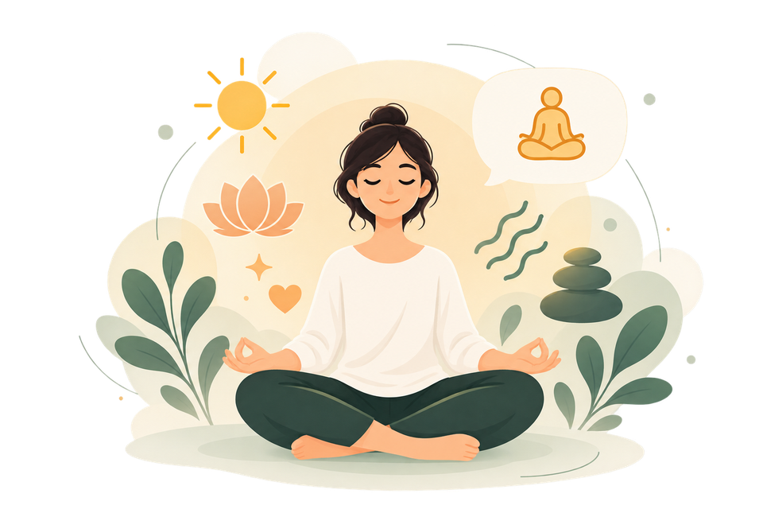
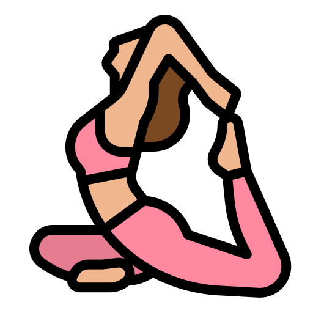
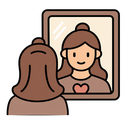

FIND STILLNESS
Meditation
2–10 minFind stillness and make a little space within.
A LITTLE SPACE TO COME BACK TO YOU
Whatever today feels like, there’s a gentle place to begin. Choose a practice that meets you where you are.

YOUR WEEK, YOUR PACE
See your activity, day by day.
Sample activity dates for preview — each filled dot represents at least one activity.
FIND WHAT FEELS RIGHT
A few minutes, just for you. Pick what sounds good today.
Find stillness and make a little space within.
Let your breath become a steady anchor.

Move gently. Breathe freely. Feel at home in your body.
Settle into a calmer space with soothing sounds.
Let your mind slow down with a gentle story.
Notice the little things that make life meaningful.

Slow down, turn inward, and give yourself a quiet moment to reflect.
Put your thoughts into words and create a little space to reflect, reset, and reconnect with yourself.